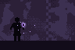

Vazio Roxo
- NovoFoi adicionada uma carta mágica que tira a sua arma por até 20 s: segure o tiro e uma esfera do vazio cresce na ponta dos seus dedos; solte e ela é lançada. A carta volta em 60 s.
- NovoA esfera chega ao tamanho máximo em 2,5 s, e uma barra no canto de baixo avisa quando chegou. Dá para segurar por até 10 s; depois disso ela é lançada sozinha.
- NovoEnquanto segura, você anda devagar, como se estivesse agachado.
- NovoA esfera atravessa tudo pelo caminho, paredes e chão, até 42 m.
- NovoSe ela passar a até 3 m de um inimigo, para e puxa ele para dentro. Quem é puxado não consegue andar nem atirar.
- NovoQuem ela pega morre na hora, e ela explode em volta, tirando até 400 de vida de quem estiver perto. Quanto maior a esfera, maior a explosão.